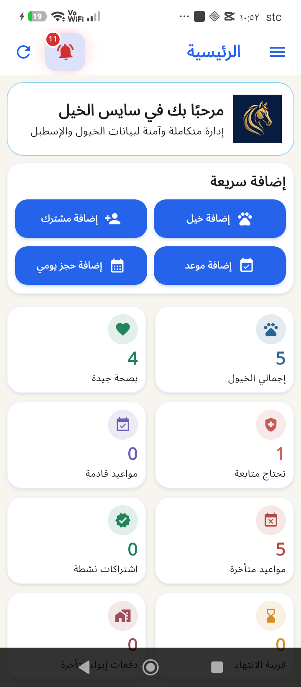
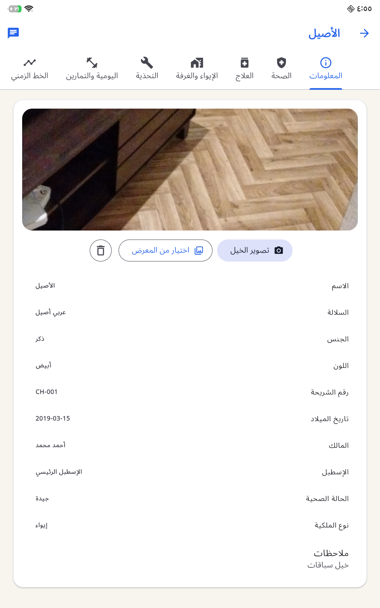

ملفات الخيول
صور بالكاميرا، العلاج والغرف والتحذية والتمارين والمواعيد والخط الزمني.
النسخة الرسمية لأندرويد
ملف أندرويد كامل يضم الخيول والمشتركين والاشتراكات والحجوزات والعلاج والإيواء والتحذية والتمارين والمالية والتقارير والنسخ الاحتياطي، دون حذف أي خدمة من التطبيق الحالي.
95E2A9ADE46E10C194B17B2D63E1CCB22EE25F6DA2204EA29557925DE360C480
واجهة عربية آمنة وسريعة
كل ما تحتاجه في الإسطبل
صور بالكاميرا، العلاج والغرف والتحذية والتمارين والمواعيد والخط الزمني.
التجديدات والدفعات والفواتير وعقود الإيواء بالتوقيع الإلكتروني.
حجوزات يومية ومواعيد مرتبطة بالخيل مع الحالة والتذكير والفتح المباشر.
السجل الصحي والعلاج والأدوية والإيواء والغرف والتحذية واليومية والتمارين، مع الصور والمرفقات.
ميزانية تفصل المخصوم وغير المخصوم وديون المشتركين، وتقارير PDF شاملة قابلة للمشاركة.
صوت jrs وتنبيه ملء الشاشة مع الاسم والنوع والسبب، وفتح القسم مباشرة أو تعديل الموعد وإخفاء التنبيه مع حفظ السجل.
التقاط صورة للخيل وإضافة صور العلاج والغرفة والتحذية والتمارين وبقية السجلات من الكاميرا أو المعرض.
تخزين محلي ونسخ احتياطية مفحوصة واستعادة آمنة دون إرسال بياناتك إلى خادم.
واجهة عربية واضحة



ثلاث خطوات فقط